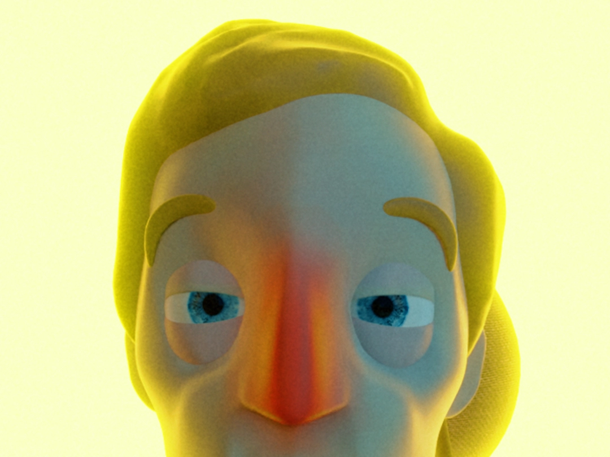
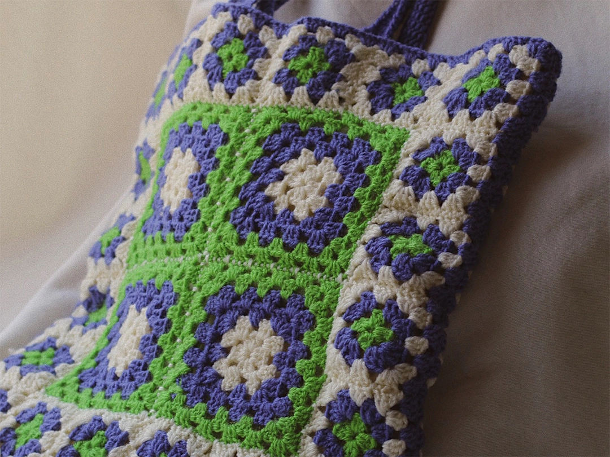
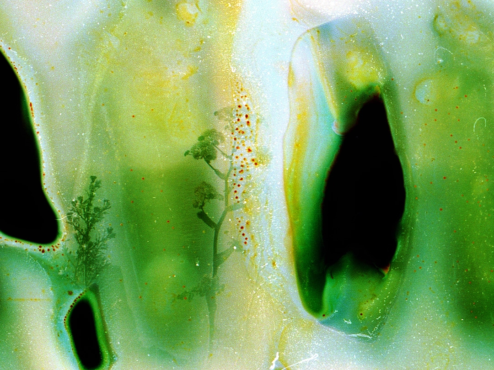
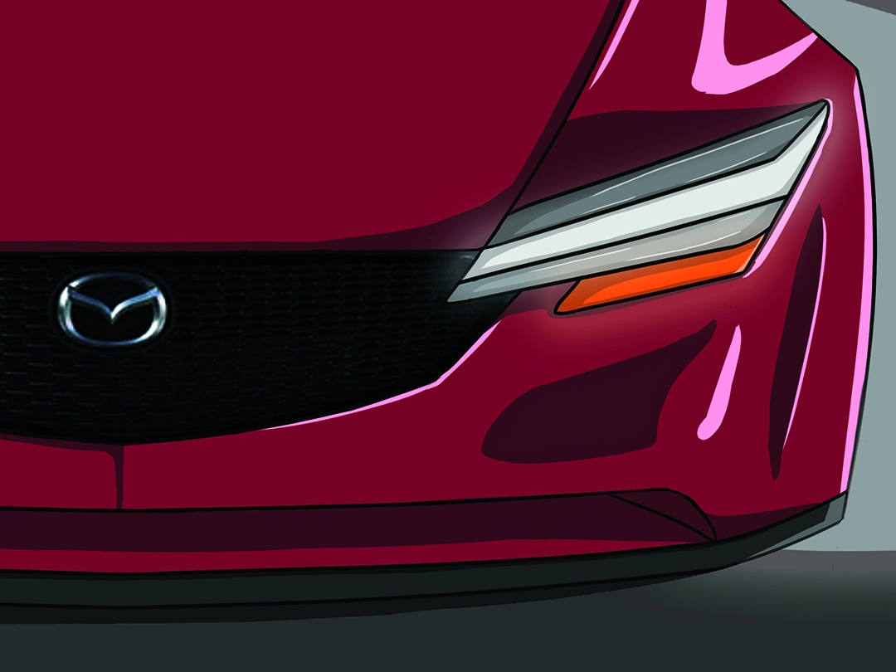
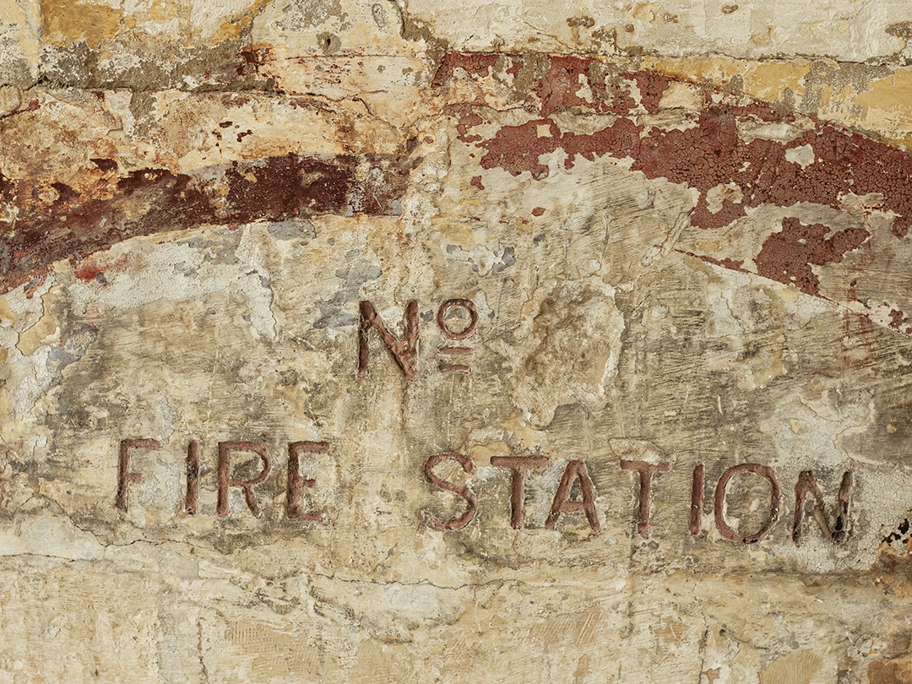
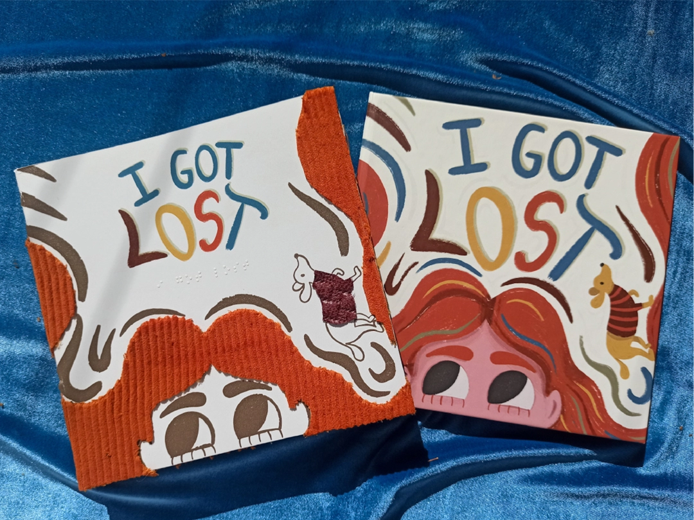

An Experimental Redesign of Historical Maltese Architecture
3D Graphics
Gabriel Agius

Pictorial Personalities
Illustration
Jelka Antunovic

Fragments
Photography
Sarah Bonaci

Familiarity in Portraiture
Photography
Abby Bonello

Potted Goods
Branding
Luke Anthony Borg

Colour in Disney’s Animated Adaptations; an Animated Adaptation of Qrempuċu u x-Xewk
3D Animation
Samwel Borg

Leaving a Mark
Typographic Illustration
Ruth Calleja

Repetition as a Record of Movement Depicted Through Lenticular Art
Photography
Stephanie Calleja

Religious Iconography in Contemporary Art
Photography
Shania Camenzuli

Visual Experience for the Visually Impaired
Illustration
Elisa Chetcuti

Project Title Here
Typography
Owen Desira

In Reenactment
Photography
Martina Farrugia

A Visual Expression of Emotion through Fluorescent Light
Graphic Design
Paige Farrugia

Emotions and Reactions Through the Interaction With Sound
Sound
Matthew Galea

Double Self-Reflection
Photography
Antonia Gatt
Kaos - Translating poetry into imagery through Illustration
Illustration
Jeanine Meli
Moving Places
Photography
Cherise Micallef
Cuddy - a local automotive companion app
UI/UX Design
Eamonn Mifsud
Body language, frame and animation: A stop motion study
Stop Motion Animation
Stefan Muscat
Re-Imagining a Local Public Space
Urban Design
Luigi Muscat Filletti
The Type That Surrounds Us
Photography
Naomi Portelli
@homeidentity_global
Graphic Design
Oksana Schranz
Double Self-Reflection
Photography
Antonia Gatt
Mazda's Evolution of Design
Illustration/Automotive Design
Kristov Scicluna
Conceptual Modular Design Within Platform Engineering
Automotive 3D Design
Nicholas Vella
Exploring the space between clothing and the female body
Film Photography
Sasha Vella
An Adapation on a classic Maltese folklore tale, The Sirens' Tale of Isla
Sequential Art
Rebecca Zammit
Adaptation of a Maltese Poem into an animated short film
3D Animation
Aaron Zarb